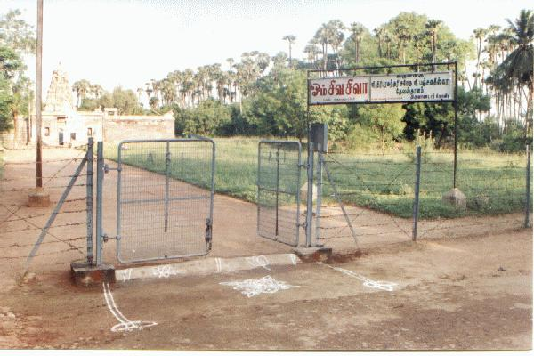
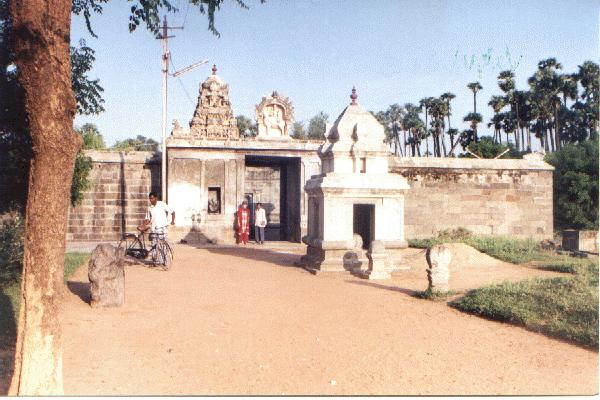
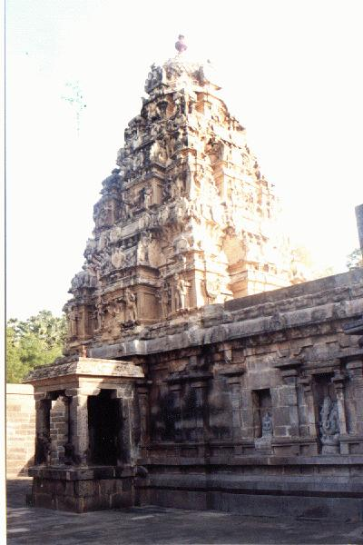
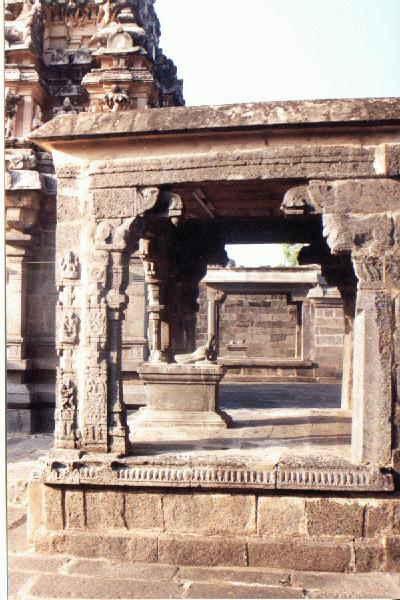
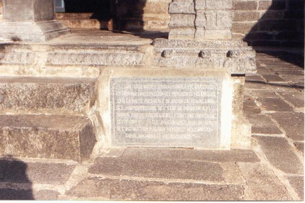

vaṭukūr
- Identifier: NA16 [LOCATION IS DISPUTED]
- Modern Name (NIC):
- Modern Name (M.I.): āṇṭārkōyil [SOLUTION 1]
- Modern Name: Tiruvāṇṭār Kōyil [SOLUTION 1]
- State: Pondicherry [SOLUTION 1]
- Nearby District & Taluk: viḻuppuram DT (viḻuppuram TK)
- Nearby Old administrative location: South Arcot DT (Villupuram TK)
- Railway station: Ciṉṉapāpucamuttiram
- Longit. 79 deg. 40'; Latit. 11 deg. 56' [NA16]
- Modern Name (Govt Press): tirukaṇṭēsvaram [SOLUTION 2]
- Modern District & Taluk: kaṭalūr DT (?paṇruṭṭi TK/ ?kaṭalūr TK) [SOLUTION 2]
- Old administrative location: South Arcot DT (Cuddalore TK) [SOLUTION 2]
- Nearby town:
- C.D.Maclean-3: entry: CUDDALORE, p. 241, col. 2,
[Tircanteshwaram (place of archaeological interest)]
- Location: according to PK: Naṭu Nāṭu (NA16)
- Name inside hymns:
- Name inside PK: vaṭukūr
- Rank inside third volume of PIFI: 244
- Rank inside Civastala Mañcari: 243
- Rank on PY576 map: 56
- Total number of patikam-s: 1
- Campantar: 1 patikam
7 pictures taken on 1998 August 4th (Tuesday, 7 a.m.)







- Patikam 1_87